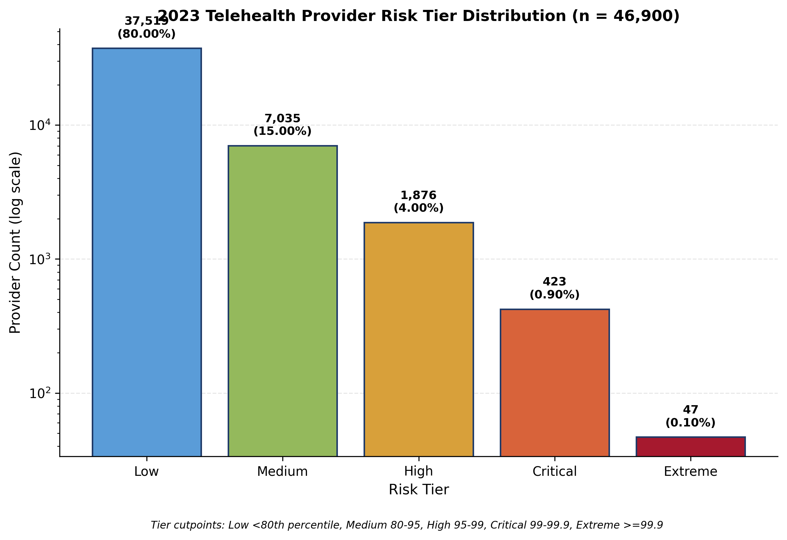
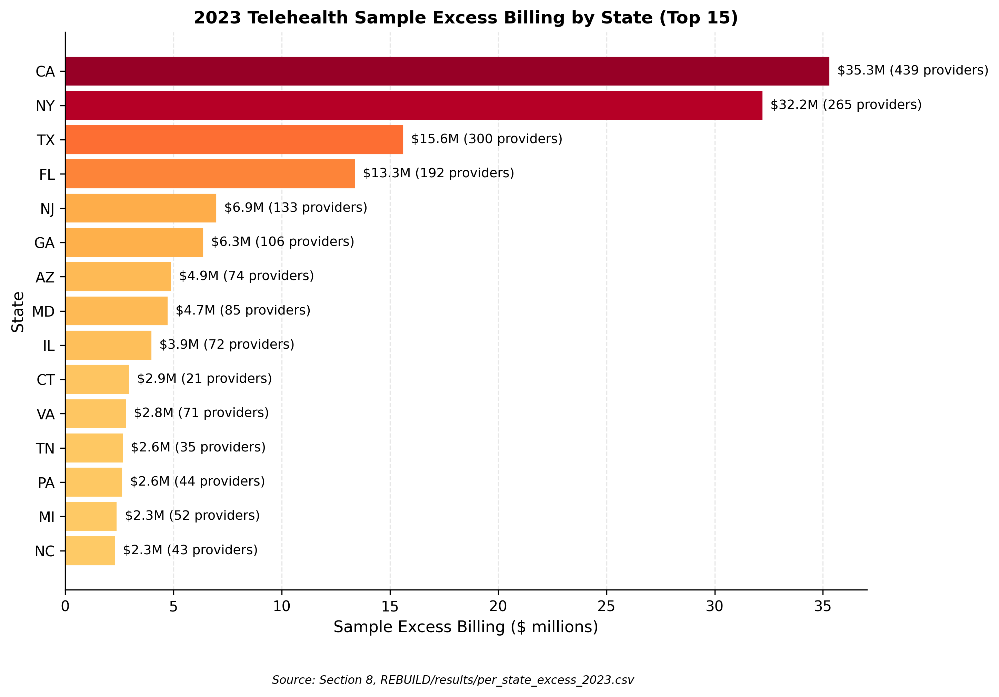
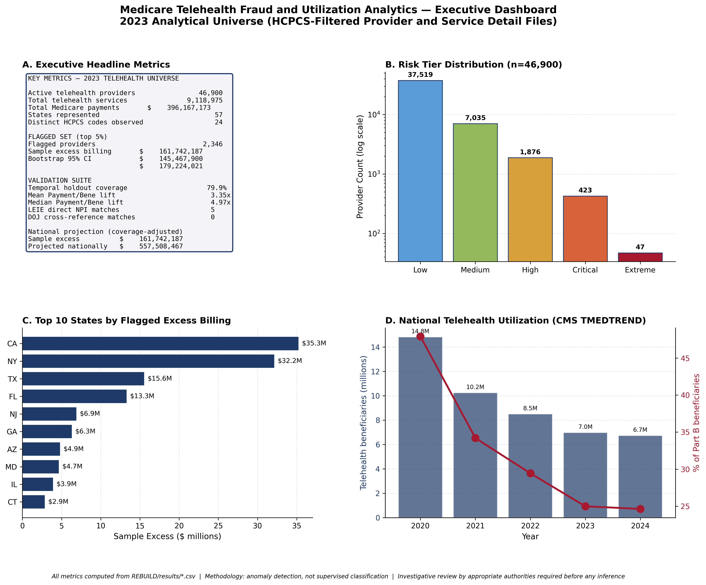

Medicare Telehealth Program Integrity
A provider level risk scoring framework for Medicare telehealth utilization following the post pandemic expansion of covered telehealth services. The system analyzes the active telehealth provider universe, scores each provider against peer baselines, and validates 63 distinct numerical claims against persisted result files.
Methodology
The analytical universe is constructed from the 2023 Medicare Provider Utilization and Payment Public Use File, filtered to providers billing one or more of 27 telehealth HCPCS codes covered by CMS. The resulting universe is 46,900 active telehealth providers responsible for 9,118,975 distinct telehealth services and 396.17 million dollars in total Medicare telehealth payments.
Of the 27 telehealth HCPCS codes in the covered basket, 24 are observed in the analytical universe. The remaining three codes have no active providers in the 2023 file.
Risk scoring is conducted at the provider level using utilization rate, payment per beneficiary, claim density, and peer benchmarked deviation. Provider risk is calibrated against the post pandemic baseline period to isolate patterns specific to the expanded telehealth coverage policy.
Key findings
The total Medicare telehealth payment volume of 396.17 million dollars represents a small fraction of overall Medicare Part B payments but is concentrated among a defined provider subset that warrants targeted oversight.
The 63 claim verification process tied every figure in the full report, dashboard, and preprint to a specific persisted result file with computational provenance. This includes universe sizes, service counts, payment totals, tier distributions, peer baselines, and bootstrap intervals.
The pattern alignment analysis maps the flagged provider population to documented OIG telehealth fraud typologies, providing an independent qualitative cross check on the statistical scoring.
Selected figures



Verification
All 63 numerical claims in this project have been verified against persisted result files. Independent reviewers can reproduce the active telehealth universe, the service counts, the payment totals, the risk scores, and the flagged set from the same Medicare Provider Utilization and Payment Public Use File and the CMS covered telehealth services list.